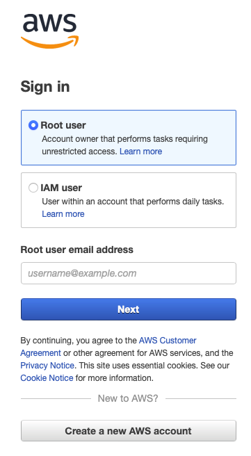
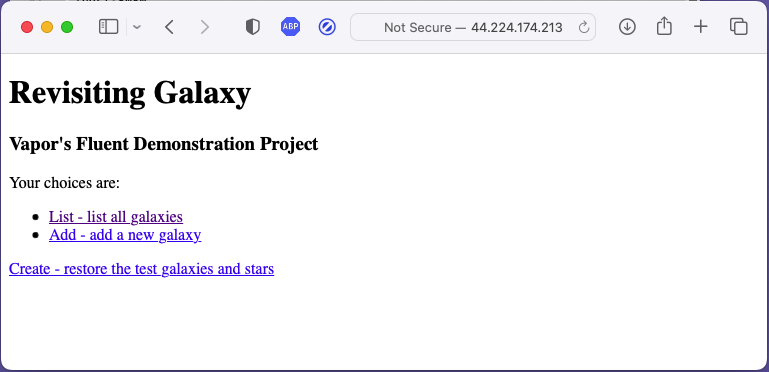

FIRST DRAFT
This is a first draft. The README lacks CSS in the GitHub viewer because GitHub doesn’t allow it, but the README will render correctly when viewed locally with a markdown viewer (like Marked2) after cloning the project. Be sure to choose the CSS file “Galaxy” at the bottom of the Marked2 page.
In the future, I’ll be adding some more stuff (like maybe replacing Fluent with Hummingbird) to the project. At the time of this writing, the project is running on AWS at michaeljwelch.org.
The login in the authentication section is “admin” or “root” and the password is “secret”. This is software for testing: don’t ever use a simple password like “secret” in production software. Your macOS will offer to generate a strong password like syKxuw-muchis-higco1.
The purpose of Galaxy Revisited is to introduce you to most of the basic concepts of Swift-Vapor-Fluent-SwiftHtml programming. Its basic purpose is to jump-start your learning experience with Server Side Swift. Galaxy Revisited was built and tested using macOS Ventura 13.0 and Xcode Version 14.0.
Galaxy Revisited is very basic. It’s intended to be used in conjunction with Tibor Bödecs’s book Practical Server Side Swift (hereafter PSSS), which goes into many more-advanced topics. You should consider this more like a self-paced tutorial on the basics, not an exhaustive treatise on the subject. Once you understand this app, everything else should make more sense.
Important
This documentation doesn’t show the actual source code for the project. You have to clone the project using git and build it using Xcode (see the section below labeled Cloning Galaxy Revisited from GitHub). As you read this document, you have to refer to the code in the app to get a full understanding. If you don’t clone and build the app, but just read this document, you may learn a few things, but you’ll miss so much.
Before going any further, it’s important to say that this app (with its documentation) doesn’t replace the official Vapor-Fluent documentation; it clarifies and demonstrates it. My recommendation is to read through the official documentation quickly to get a feel for what’s there, but don’t dwell on it. Then come here and work with the Galaxy Revisited app to get hands-on experience. After you get the gist of it all, you can use both as reference materials.
Below you can see a diagram of the app’s page flow. You can see how simple it is, yet it demonstrates the foundation of every server-side Swift app. It starts with a welcome page; that takes you to the galaxy page which in turn allows you to create, read, update, and delete galaxies… CRUD, as it’s commonly referred to. There are two database tables, galaxies, and stars which are used to demonstrate links using UUIDs in a one-to-many relationship (see the Wikipedia article on UUIDs for more information).

As you experiment with this app, you can save your place using Git (Xcode Menu -> Source Control -> Commit), then if everything goes South, just restore the project and start over. This is a risk-free learning experiment.
Run it and examine the data flow. You can make changes to see what’ll happen, and at any time, revert it and start again. Experimentation of this sort is where you learn the most, especially when there’s nothing at risk. Note that the chart above doesn’t show the home links which you find on every page.
As is common in Vapor-Fluent databases, the tables use a UUID for the primary key. Galaxy Revisited is designed such that the user (nominally) never sees a UUID, but show pages show them just for instructional purposes. In a real application, the UUIDs in the database table are generally used by other tables to reference a record in this one. Normally, they would never change because that would break the link between tables.
In Galaxy Revisited, however, whenever the database is restored to its nominal content, or a test is run, the database data is erased and replaced with fresh, new data in which all the UUIDs are also new. This ability is useful for testing, where you want to be able to have non-repeatable data to discover errors caused by stale data. In a real app, the test database and the production database would be separate, but in Galaxy Revisited no effort has been made to make them so. Here’s an area you could experiment with.
Warning
You can’t meaningfully sort on a UUID because they are (nominally) random. You may want to consider adding an integer key to the table which is automatically incremented which you can use for sorting by insertion order. Otherwise, there is no practical way to pick up the first or last record by order of insertion or return a series of records in insertion order.
Also, remember that first in a Fluent query means the first record found which meets the search criteria, not the first record inserted into the table (although it may coincidentally be the same record). MySQL and some other databases do not guarantee that records will be returned in any particular order without an ORDER clause. Hic sunt dracones.
In one post, the poster also pointed out that you need a sequential number in insertion order to be able to pick up the prior and the following records by subtracting 1 or adding 1 to the sequential key value. The flaw here is that if you have records A, B, C, D, and E, and you read record C, the technique will work to read records B and D, but if for some reason record B or D gets deleted, the method will fail with a record not found. Oops, back to the drawing board!
The only reliable way of reading the table in reverse insertion order is to sort it by insertion order descending or keep two insertion keys, one ascending and one descending. For the example above, you’d need two queries to accomplish this. These and any other techniques for retrieving records in reverse order of insertion are the least-worst solutions (unfortunately). The best solution is to design software that doesn’t rely on reading tables in reverse order of insertion.
This project was designed to be developed on a Mac computer and deployed on an Amazon AWS EC2 instance using an Amazon Linux2 Server. If you don’t have that setup, you can still use this document, but you’ll have to figure out the differences between what you have and our suggested setup.
The project documentation is comprised largely of two sections, development on a Mac with Xcode, and production (deployment) on an Amazon AWS EC2 server. The good news is that almost any Linux will work fine, but keep in mind that there are two ancestors to most Linux systems, RedHat and Debian. There will be small differences between them; for example, RedHat uses yum and Debian uses apt. If you are experienced with Linux, you probably already know the differences and will have no trouble.
Also, you can develop on the Linux system; it’s just far less convenient and will cost you much more time. If you have a significant project, you will be well served by buying a Mac for Xcode development. It’ll be much easier, save lots of time, and, most importantly, be more fun.
You can find Galaxy Revisited on GitHub.
Click the green Code button, and from the dropdown, click the copy icon  .
.
Open a terminal window on your Mac, and cd to the place where you want the project to go. Enter:
git clone ⌘v
cd GalaxyRevisited
ls -hAltYou should get:
total 320
drwxr-xr-x 12 mike staff 384B Nov 9 19:19 .git
-rw-r--r-- 1 mike staff 1.8K Nov 9 19:19 docker-compose.yml
drwxr-xr-x 3 mike staff 96B Nov 9 19:19 Tests
drwxr-xr-x 4 mike staff 128B Nov 9 19:19 Sources
drwxr-xr-x 4 mike staff 128B Nov 9 19:19 Resources
-rw-r--r-- 1 mike staff 98K Nov 9 19:19 README.md
drwxr-xr-x 5 mike staff 160B Nov 9 19:19 Public
-rw-r--r-- 1 mike staff 1.3K Nov 9 19:19 Package.swift
-rw-r--r-- 1 mike staff 7.2K Nov 9 19:19 Package.resolved
-rw-r--r-- 1 mike staff 34K Nov 9 19:19 LICENSE
-rw-r--r-- 1 mike staff 2.6K Nov 9 19:19 Dockerfile
-rw-r--r-- 1 mike staff 97B Nov 9 19:19 .gitignoreDouble-click the Package.swift icon. The project will open in Xcode. Click GalaxyRevisited in the navigator pane, and the Package.swift file should open.
Important
Click the schema editor dropdown menu and select Edit Scheme. In the scheme edit window, select Run on the left-hand side, and Options at the top bar. Go down to Working Directory and check Use custom working directory, and select the GalaxyRevisited project folder. Repeat this for Profile. If you don’t do this, some resources won’t be found when you run the app.
Click in the editor window, then type ⌘U and the project will build and tests will run. This took less than 30 seconds the first time. After the first time, it takes only a few seconds.
You should see the Build Succeeded and Test Succeeded windows pop up one at a time on the screen.
Open the output window at the bottom right of the Xcode editor window  , then type the Run command
, then type the Run command ⌘R or click the run button  and if the Developer Tools Access dialog opens, enter your login password and click continue, then you should see:
and if the Developer Tools Access dialog opens, enter your login password and click continue, then you should see:
[ NOTICE ] Server starting on http://127.0.0.1:8080in the output window. To test the app, run your browser and enter:
http://localhost:8080/and the welcome page should be displayed.
To stop the execution, click the stop button  .
.
No, sorry. There must be plenty of places where improvements can be made, and if you find one, give it a try! I haven’t been entirely consistent in my naming conventions, either. As we programmers like to say, “I’ll do it better next time!” (Shame on me for that one.) That’s what this app is for. Learning and experimenting without risk.
As I was programming the tests (and that turned out to be more code than I anticipated), I found that I was starting to cut corners to save work, and the quality of what I was doing was dropping dramatically. There are some sayings among writers:
This applies to writing Swift also. Good code has several characteristics:
The most important characteristic is reliability; it must always work as expected. This may seem obvious, but it’s easy to overlook places where unexpected errors can occur, and it often involves nil-optionals and throws. Careful design up-front can reduce this problem. Try making a small change to your code that you know will cause a failure, such as passing a UUID for which there is no database record, then see if the error gets caught. This can be put into a test, although there is none in Galaxy Revisited. Try Adding a test like that.
Simplicity is the next important characteristic, and this usually brings to mind Occam’s Razor, which is simply: the simplest solution is usually the best. Crafting code that uses the full power of Swift can lead to simpler, more expressive, code.
Maintainability is next. Code must be crafted to make it easy to follow, but good code alone isn’t good enough: you need good comments in the code also. For that, there are many style guides you can refer to listed below.
Lastly, we used to think that small, fast code was the goal, but that was back in the day when a giant mainframe had only one-megabyte of core memory, instruction times were measured in microseconds, and the computer required a small building to house it, and an electrical power station nearby (I worked on one of these: I’m thinking of you, IBM/360). Today computers have thousands of times that much memory and instruction cycle times are measured in fractions of nanoseconds, and an Apple Macbook M1 uses only about 8–15 watts of power. Today, the goal is reliable and maintainable code. Small and fast are the jobs of the compiler (and Swift does it so well).
Some of the many guidelines available can be found here:
Now, after this long exhortation, I have to admit that I deliberately violated the rules in one situation. This code:
try app.test(.POST, "/galaxy/delete", beforeRequest: { req in
var galaxyIdContext = GalaxyIdContext()
galaxyIdContext.galaxyId = smallMagenicCloudUuid
try req.content.encode(galaxyIdContext, as: .urlEncodedForm)
}, afterResponse: { res in
XCTAssertEqual(res.status, .seeOther)
})looks better this way:
try app.test(.POST, "/galaxy/delete",
beforeRequest: { req in
var galaxyIdContext = GalaxyIdContext()
galaxyIdContext.galaxyId = smallMagenicCloudUuid
try req.content.encode(galaxyIdContext, as: .urlEncodedForm)
},
afterResponse: { res in
XCTAssertEqual(res.status, .seeOther)
}
)Notice that the closures, beforeRequest and afterResponse, can more easily be visualized as independent blocks of code.
The bottom line is that a generic set of rules can’t cover every possible case, and you’ll just have to use your judgment in some situations, but remember, if you reformat this code using <ctrl>i, you’ll get this ugly and difficult to read code (which follows the rules):
try app.test(.POST, "/galaxy/delete",
beforeRequest: { req in
var galaxyIdContext = GalaxyIdContext()
galaxyIdContext.galaxyId = smallMagenicCloudUuid
try req.content.encode(galaxyIdContext, as: .urlEncodedForm)
},
afterResponse: { res in
XCTAssertEqual(res.status, .seeOther)
}
)I realized that I had to go back and do better. It’s called crafting. Writers call it wordsmithing. The lesson here? Learn and follow the guidelines to make yourself a better Swift programmer, but keep it sane.
Vapor uses a common structure for developing a server-side app that’s close to the default structure of a default (non-Vapor) Swift project that the swift tool creates. Also, if you create a project with the vapor tool, it follows this pattern, but with some minor differences. In addition, there are some minor differences to accommodate the programming style you find in Galaxy Revisited and PSSS.
This structure divides the code and other files into separate areas of concern. These areas are similarly divided into other sub-areas, and all of this serves to bring a high level of organization to the project which makes the project easier to write and maintain. Notice that each controller is similar: it shows how a logical organization enables patterns to be used to organize the source.
When you organize your code this way, you’ll find that you spend most of your time in just a few folders, maybe Controllers and Templates, for example. Everything else is mostly static, and since the other code is physically separated, the chance of accidentally modifying it is very low.
This style would be considered a model-view-controller (MVC) style, but Galaxy Revisited isn’t tightly bound to that style and considers MVC to be more of a suggested pattern of design. Do what’s best for your project; don’t manipulate your code to comply with a style strictly for the sake of compliance. Think pragmatically.
A big difference you’ll see in Galaxy Revisited is the use of DTOs or Data Transfer Objects (see the section on DTOs for more information); here we refer to them as contexts.
The project folder for Galaxy Revisited looks like this:
Project Folder
├── Public Runtime files
├── Resources The database, CSS, and images
├── Sources
│ ├── App
│ │ ├── Extensions Application-wide extensions
│ │ ├── Modules The all controller source code
│ │ │ ├── Galaxy The Galaxy controller source code
│ │ │ │ ├── Controllers The controller endpoints
│ │ │ │ ├── Migrations Fluent migration code here
│ │ │ │ ├── Models The Fluent model(s)
│ │ │ │ └── Templates
│ │ │ │ ├── Contexts All DTOs (contexts)
│ │ │ │ └── Html All SwiftHtml modules go here
│ │ │ ├── Star The collection of Star source code
│ │ │ │ ├── Controllers Same breakdown as Galaxy
│ │ │ │ ├── Migrations
│ │ │ │ ├── Models
│ │ │ │ └── Templates
│ │ │ │ ├── Contexts
│ │ │ │ └── Html
│ │ │ └── Welcome
│ │ │ ├── Controllers Same breakdown as Galaxy
│ │ │ └── Templates
│ │ │ └── Html
│ │ ├── Protocols Application-wide protocols
│ │ └── Template Tibor Bödecs's handy template helpers
│ └── Run Startup code
└── Tests
└── AppTests All test-related materials are hereGalaxy Revisited takes a top-down and visually oriented approach as much as possible. This approach is suitable for auditory-sequential learners, but it’s especially important for visual-spatial learners who need to see the big picture before the nitty-gritty details. So, we start at the top and work our way through somewhat like a user might try out the app. As we go through the pages, we’ll explore the coding techniques needed to implement Vapor-Fluent-SwiftHtml apps. This method is referred to as Ariadne’s thread in logic and it’s thusly applied to programming.
The project structure in the Xcode navigator is decidedly not top-down, but alphabetical because Xcode sorts all the folders and files in alphabetical order. The Galaxy Map is a much better way to visualize the top-down flow of the app. This flow will be followed to some degree here; we’ll take a look at different concepts in the order they come up, taking into account that many of the techniques appear repeatedly, so we only need to discuss them once.
All requests in controllers begin with a Request object. They mostly follow the pattern
func endPoint(_ req: Request) async throws -> Response {
<handle the request, creating a response>
return <Response>
}GalaxyRevisited renders HTML docs using a brand new domain-specific library (DSL) called SwiftHtml and the Vapor web framework. The code is pretty straightforward, especially if you know a bit about HTML. The SwiftHtml library tries to follow the naming conventions as closely as possible, so if you’ve written HTML before this syntax should be very familiar, except that you don’t have to write opening and closing tags: instead, we utilize the Swift compiler to do the boring repetitive tasks for us.
Since we’re using a DSL in Swift, the compiler can type-check everything at build-time: this way it’s 100% sure that our HTML code won’t have syntax issues. Of course, you can still make semantic mistakes, but that’s also possible if you’re not using a DSL.
The main advantage here is that you won’t be able to mistype or misspell tags, and you don’t even have to think about closing tags, but you can use result builders to construct the HTML node tree. SwiftHtml uses Tags for nodes and it builds a tree from them; this makes it possible to efficiently render the entire structure with proper indentation, or minification if needed.
For an in-depth tutorial, look at How to write HTML in Swift?
Here’s an example of SwiftHtml showing a form inside a table, and inside the form, a hidden input field and button. In the case of a button, the button takes the place of an input+submit, and thus allows for multiple buttons in the same form, each with a different destination URL.
Note that:
Table {
Tr {
Td {
Form {
Input()
.type(.hidden)
.name("galaxyId")
.value(galaxyContext.galaxyId)
Button("Show-3")
.type(.submit)
.name("show-3-submit")
.formaction("/galaxy/show2")
.formmethod(.get)
.formenctype(.urlencoded)
}.name("show-3-form")
}
}.style("background-color: #F0F0FF")
}This will generate HTML that looks like this:
<table>
<tr style="background-color: #F0F0FF">
<td>
<form name="show-3-form">
<input type="hidden" name="galaxyId" value="35B56F32-D794-430F-B6AD-1FEF5535684E">
<button type="submit" name="show-3-submit" formaction="/galaxy/show2" formmethod="get" formenctype="application/x-www-form-urlencoded">Show-3</button>
</form>
</td>
</tr>
</table>Notice that the input button properties match the listing in the W3C page, with the exception that enums are preceded by a period as required by Swift syntax.
Vapor-SwiftHtml templates are very simple to build. Here’s an example of a template:
var galaxiesContext: GalaxiesContext
init(_ galaxiesContext: GalaxiesContext) {
self.galaxiesContext = galaxiesContext
}
@TagBuilder
func render(_ req: Request) -> Tag {
Html {
Head {
...
}
Body {
...
}
}.lang("en-US")
}and its contexts.
struct GalaxiesContext {
var galaxies: [GalaxyContext]
...
}
struct GalaxyContext: Content {
var galaxyId: String = ""
var name: String = ""
var magnitude: Float = 0.0
var distance: Int = 0
var constellation: String = ""
...
}The var galaxiesContext will hold the context, i.e., the data to render in the template. That var gets filled in the init function.
@TagBuilder identifies this as a SwiftHtml DSL builder that returns a Tag. The Html, Body, H1, Table, Tr, Th, Td, A, Form, Input, Button, and Br statements follow the same pattern: they are the capitalized name of the HTML tag, and they have the same attributes as the tag definitions in the W3C HTML specification.
Here’s an a tag example.
A("Show").name("show-link").href("/galaxy/show?galaxyId=\(galaxyContext.galaxyId)")generates:
<a name="show-link" href="/galaxy/show?galaxyId=C666C717-319F-48A2-B80D-93CF2E055B4C">Show</a>The sharp eye might have noticed that the a tag has a name attribute that’s not supported in the W3C specifications. Spoiler alert: it’s for testing. We’ll get to that in the chapter on testing.
Here’s another example.
Form {
Input().type(.hidden).name("galaxyId").value(galaxyContext.galaxyId)
Button("Show").name("show-submit").type(.submit)
.formaction("/galaxy/show")
.formmethod(.get).formenctype(.urlencoded)
}.name("show-form")Beware
If the tag has a body, the attributes must follow the body; for example, the .name(“show-form”) follows the closing bracket of the Form in the example.
The HTML produced is:
<form name="show-form">
<input type="hidden" name="galaxyId" value="C666C717-319F-48A2-B80D-93CF2E055B4C">
<button name="show-submit" type="submit" formaction="/galaxy/show" formmethod="get"
formenctype="application/x-www-form-urlencoded">Show</button>
</form>The Vapor-Fluent Model is just a definition of what the database object (or table in relational databases like Sqlite) looks like. Notice the use of Swift properties in the definitions. Don’t worry about how Swift properties work: just follow the pattern.
In the @Field definition, it appears that field names are repeated, but there is a reason for the apparent duplicity. Take this field definition, for example.
@Field(key: "constellation_name") var constellationName: StringThis says that, in the database, the column name in the table is constellation_name, but in the Swift app, the name is constellationName. PostgreSQL, for example, uses all lowercase letters in a field name whereas your app must conform to Swift naming rules and styles. This is the way Vapor allows for compatibility between Swift and your database. This feature can also be used to gain compatibility with legacy databases.
In migrations, it’s the first name, constellation_name which will be used in the database.
Fluent requires an empty init( ) { } function.
As I mentioned earlier, data is transferred in and out of models through DTOs. Let’s see how that works. (The try awaits and guards were removed for clarity.)
Data is transferred into GalaxyModel from GalaxyContext for one of two reasons:
galaxyModel = GalaxyModel(new: galaxyContext)or
galaxyModel.update(update: galaxyContext)You may be wondering why there is an init(new:…), but a func update(update:…); it’s because init creates a new instance whereas update acts on an existing instance.
The difference is that GalaxyModel(new:) sets the id to nil to signal to Fluent that this
is a new record to be added to the database.
The GalaxyModel can be initialized by reading from the database, also. In this case, the data is moved to the GalaxyContext for one of two reasons:
GalaxiesContext(many: GalaxyModel.query(on: req.db).all())or
GalaxyContext(model: GalaxyModel.find(galaxyId, on: req.db))One More Thing…
GalaxiesContext is just an array of GalaxyContexts. Notice that there is another init for GalaxiesContext_ that allows for a single galaxy:
GalaxiesContext(one: GalaxyModel.query(on: req.db).first())This particular function didn’t get used, but I left it in anyways.
Although the app “starts” here, in reality, the Swift code just sets up the Vapor environment and starts Vapor. Once Vapor is running, it listens for connections and handles requests. As part of the configuration process, this code calls configure.swift, and that opens the database, runs the migration, and initializes the routes tables.
Main starts by calling configure.swift, and that opens the database first. If there isn’t a database, and you’re using sqlite, it will create it. If you’re using MySQL, you have to do that yourself manually using MySQL utilities (see how it’s done on AWS). If the database gets created during the initial startup of Galaxy Revisited, it won’t have any tables in it. Those will get created during the migration process, but they’ll be empty tables.
There are two migrations, one for galaxies and the other for stars. Note that migrations are run in the order they are defined, galaxies first, then stars because when creating the stars, the galaxies (the parents) must already be present. That’s evident in createUniverses.swift. Having a set of starting data makes it easier to jump right in and start learning.
That means that the very first time Galaxy Revisited is run (before the database exists), you have to select Create - restore the test galaxies and stars on the home page (unless, by chance you run the tests first, in which case the tests did the Create function). If you want to use another database such as PostgreSQL or MySql, you may have other things you’ll have to do to set up the database that is beyond the scope of this book.
The last thing configure does is load the routes, and after that, Vapor waits for requests. To see the main (Welcome) page, you have to start the app running in Xcode and enter the URL http://localhost:8080/ into your browser. From there, you can follow links all around the app.
Once you have the app running, use your browser to go to http://localhost:8080/; the first page that comes up is the Home page from the WelcomeController which looks like this:
!TODO update image to show the readme line
The very first time you run the app, choose Create - restore the test galaxies and stars to initialize the database with test data. After the database is initialized (or re-initialized), you’ll be left at the List - list all galaxies page. Seven galaxies are created, each with some stars. Anytime you want to come back to this state, just click on the Create link on the Home page again.
The Home page, a.k.a. the Welcome page, has three links:
Important Tip
UUIDs are used to identify one object from another uniquely. You can enter the same galaxy twice in the app, but behind the scenes, each will have a unique UUID. UUIDs are important for that very reason: each object must be uniquely identifiable. Be aware: each time you click the Create - restore the test galaxies and stars link you’ll get all new UUIDs because all the data is deleted first, then new galaxies and stars are added back in. In normal apps, you don’t recreate data like this: database records, once created, are permanent and their UUIDs are permanent (unless you deliberately delete them).
One other thing: macOS UUIDs created by Swift, Vapor, and Fluent are all uppercase even though the UUID specifications call for lowercase. Just note that when the String form of an upper-case UUID it’s compared with its lower-case form, it should be obvious that an exact comparison will fail, but a case-insensitive comparison would pass. In some applications, the case may not matter (because they use case-insensitive comparisons), but the safest path to follow with macOS is to make all UUIDs uppercase, even if they weren’t created by Swift, Vapor, or Fluent. Consistency in the treatment of UUIDs will be rewarded.
Add - add a new galaxy
Create - restore the test galaxies and stars
To continue, click the List - list all galaxies link to go to the next page.
This page demonstrates how to pass parameters in a GET call. There are three ways to pass a parameter:
HTML4 only supported a single submit button for a form and a single action. HTML5 added a button (which acts like an <input type=submit>) to forms. The formaction attribute in a button can specify a different action for each button, thus allowing the same form to be sent to different endpoints. The Show–3 and List Stars forms use buttons.
The Show–1 link transfers to the Show a Galaxy Page. It demonstrates how to pass a parameter through a URL and is the first of three different ways to pass one or more parameters in a GET request by including them in the URL. An example of a UUID passed through a URL (where the parameter is highlighted) is:
The SwiftHtml coding in GalaxyIndexTemplate.swift is:
A("Show-1").name("show-1-link").href("/galaxy/show1/\(galaxyContext.galaxyId)")and generates this HTML:
<a name="show-1-link" href="/galaxy/show1/1E3E85B9-7C17-4BAA-A2F8-2C67B73CDC10">Show-1</a>where the UUID 1E3E85B9–7C17–4BAA-A2F8–2C67B73CDC10 was read from the database in /galaxy/index/.
Important Tip: SwiftHtml “A” Tag Needs To Be Extended
As mentioned before, the <a> tag doesn’t have a name attribute, but we’ll need one for testing. Since it’s not part of the W3C specification, SwiftHtml doesn’t accept it. To get around this, we extend SwiftHtml in SwiftHtmlTags.swift. Some Ruby programmers call this monkey patching, but it’s a feature of Ruby, not a bug. In Swift, it’s an important feature that you’ll find useful in many situations, and it’s used extensively by Swift programmers.
When you click the Show–1 link in the browser, Vapor receives the request and looks for the URL /galaxy/show1/:galaxyId in the routing tables, then calls func show1( ) in GalaxyController.
Show–1 link gets defined in the routes table like this:
galaxyRoutes.get("show1", ":galaxyId", use: show1) // maps: "/galaxy/show/<galaxyId>"You can see the value 1E3E85B9–7C17–4BAA-A2F8–2C67B73CDC10 in the GET request that will get decoded by Vapor into the parameters.
At func show1(…) the incoming GET request gets processed and stored in the request like this:
RoutingKit.Parameters(
values: ["galaxyId": "1E3E85B9-7C17-4BAA-A2F8-2C67B73CDC10"],
catchall: RoutingKit.Parameters.(unknown context at $100ff480c)
.Catchall(values: [], isPercentEncoded: true), logger: Logging.Logger(
handler: ConsoleKit.ConsoleLogger(
label: "routing-kit-parameters-logger", metadata: [:], logLevel: info,
console: ConsoleKit.Terminal), label: "routing-kit-parameters-logger"))The func showGalaxy is common for the three show buttons. It completes the show operation given the galaxyId.
The Show–2 link transfers to the Show a Galaxy Page. It demonstrates how to pass a parameter through a URL query and is the second of three different ways to pass one or more parameters in a GET request by including them in the URL query. An example of a UUID passed through a URL query (where the parameter is highlighted) is:
The SwiftHtml coding is:
A("Show-2").name("show-2-link").href("/galaxy/show2?galaxyId=\(galaxyContext.galaxyId)")and generates:
<a name="show-2-link" href="/galaxy/show2?galaxyId=1E3E85B9-7C17-4BAA-A2F8-2C67B73CDC10">Show-2</a>Again, the UUID is passed in the URL, but not as a part of the URL proper, but as a query string following the “?” and is decoded differently.
When Vapor gets this, it decodes the request into req.query and we pick it up using req.query.decode(GalaxyIdContext.self). Note that queries passed as part of the URL are decoded into query and must be decoded into a context, rather than directly into a var.
galaxyIdContext = try? req.query.decode(GalaxyIdContext.self)
guard ...
... galaxyIdContext.galaxyIdThe Show–3 button transfers to the Show a Galaxy Page. It demonstrates another way to pass a parameter through a URL query and is the third of three different ways to pass one or more parameters in a GET request by including them in the URL query. An example of a UUID passed through a URL query (where the parameter is highlighted) is the same as the Show–2 link, but using a button:
The SwiftHtml coding is:
Form {
Input().type(.hidden).name("galaxyId").value(galaxyContext.galaxyId)
Button("Show-3").name("show-3-submit").type(.submit)
.formaction("/galaxy/show2")
.formmethod(.get)
.formenctype(.urlencoded)
}.name("show-3-form")and generates:
<form name="show-3-form">
<input type="hidden" name="galaxyId" value="1E3E85B9-7C17-4BAA-A2F8-2C67B73CDC10">
<button name="show-3-submit" type="submit" formaction="/galaxy/show2" formmethod="get"
formenctype="application/x-www-form-urlencoded">Show-3</button>
</form>When Vapor gets this, it decodes the request into req.query and we pick it up using req.query.decode(GalaxyIdContext.self). Note that queries passed as part of the URL are decoded into query and must be decoded into a context, rather than directly into a var.
let galaxyIdContext = try req.query.decode(GalaxyIdContext.self)
let galaxyId = UUID(galaxyIdContext.galaxyId)!The astute reader will have noticed that the URL links to /galaxy/show2 which is the same as the show–2 link. The reason is that the show–3 form/button produces a query identical to the show–2 query, which means that it can be decoded by the same (Show–2) code.
When Vapor gets this, it decodes the request into req.query just as was done for the show–2 link. We use it accordingly.
The List Stars button transfers to the List All Stars Page. It demonstrates the way to pass multiple parameters through a URL query and works in a way similar to the way the Show–3 button works, but has more parameters and transfers to show/index.
The SwiftHtml coding is:
Form {
// send a StarIdContext.swift
Input().type(.hidden).name("galaxyId").value(galaxyContext.galaxyId)
Input().type(.hidden).name("galaxyName").value(galaxyContext.name)
Input().type(.hidden).name("starId").value("")
Button("List Stars")
.type(.submit)
.name("show-stars-submit")
.formaction("/star/index")
.formmethod(.get)
.formenctype(.urlencoded)
}.name("show-stars-form")and generates:
<form name=\"show-stars-form\">
<input type=\"hidden\" name=\"galaxyId\" value=\"1E3E85B9-7C17-4BAA-A2F8-2C67B73CDC10\">
<input type=\"hidden\" name=\"galaxyName\" value=\"Large Magellanic Cloud\">
<input type=\"hidden\" name=\"starId\" value=\"\">
<button type=\"submit\" name=\"show-stars-submit\" formaction=\"/star/index\" formmethod=\"get\" formenctype=\"application/x-www-form-urlencoded\">List Stars</button>
</form>When Vapor gets this, it decodes the request into req.query and List All Stars picks it up in StarController.index using req.query.decode(StarIdContext.self). It’s the same technique that was used in Show–2, except that more parameters are used in the StarController.
let starIdContext = try req.query.decode(StarIdContext.self)
let galaxyId = UUID(starIdContext.galaxyId)!Once the galaxy UUID has been decoded, a common code can be used to retrieve the galaxy and load the template. (See showGalaxy in GalaxyController.) Function index demonstrated how to read all galaxies from the database: showGalaxy demonstrates how to retrieve one galaxy given its UUID.
guard let galaxy = try await GalaxyModel.find(galaxyId, on: req.db) else {
...
}The let galaxy will either have the requested galaxy or nil depending on whether the galaxy with the UUID given was found in the database or not. If it’s nil, the guard code will be executed; otherwise, the execution will continue.
Since there is now a unique key (the primary key in this example), the Model.find function can be used to look up the galaxy.
let galaxy = try await GalaxyModel.find(galaxyId, on: req.db)The galaxy is next passed to the GalaxyContext, then the context is passed to the template, and finally, that is what gets passed back to Vapor.
return req.templates.renderHtml(GalaxyShowTemplate(GalaxyContext(model: galaxy)))The read cycle is now complete. You’ve seen three different ways to pass the galaxyId from one page to another. Star pages will be similar, but star pages will need to pass the galaxyId and the starId, plus we’ll pass the galaxyName (since we already have it) so that it can be used to display the galaxy name in star pages without having to do an extra database read just to get the name.
Point of Personal Preference
When updating a record, it’s easier for the user if the target is displayed on the page. if you ever updated two accounts, one for yourself and one for your partner at the same time, you know how easy it is to get them mixed up and enter data for one in the window for the other. Displaying the name of the person on the page being updated eliminates this problem.
In this case, the name of the galaxy (the parent) is displayed on the star’s (the child) pages.
This page demonstrates a show page. Note that there are three ways to get to this page because I wanted to show the three ways to pass parameters in a GET call. In Show Star, there’s only one button, so the decode and the show can be done in one endpoint.
A show page serves multiple functions:
To operate the Update button, change anything in the input fields above, and click on the button. The update will be performed with no warning dialog (although one would be advised in a real app). (See POST Update request using a form below.)
When the Delete button is clicked, the galaxy is looked up first to verify its existence and get the current state of the record.
When the List Stars button is clicked, the page transfers to the List All Stars page.
This endpoint is reached through GalaxyShowTemplate Update button. When you make changes and click the Update button, the contents of the form are sent to the update function.
A simplified representation of the SwiftHtml coding in GalaxyShowTemplate.swift with field data is:
Form {
Input().type(.hidden).name("galaxyId").value(galaxyContext.galaxyId)
Input().type(.hidden).name("galaxyName").value(galaxyContext.name)
Input().type(.hidden).name("starId").value("") // for List Stars below
Table {
Tr {
Td { Input().type(.text).name("name").value(galaxyContext.name) }
}.style("background-color: #F0F0FF")
Tr {
Td { Input().type(.text).name("magnitude").value(String(galaxyContext.magnitude)) }
}.style("background-color: #F0F0FF")
Tr {
Td { Input().type(.text).name("distance").value(String(galaxyContext.distance)) }
}.style("background-color: #F0F0FF")
Tr {
Td { Input().type(.text).name("constellation").value(galaxyContext.constellation) }
}.style("background-color: #F0F0FF")
Tr {
Td {
Button("Update").type(.submit).name("update")
.formaction("/galaxy/update").formmethod(.post)
}
}
}
}.name("show-galaxy-form")and a simplified representation of what it generates is:
<form name="show-galaxy-form">
<input type="hidden" name="galaxyId" value="3FD3A941-9B57-4A15-8A3E-1C0FA9D62FF1">
<input type="hidden" name="galaxyName" value="Milky Way Galaxy">
<input type="hidden" name="starId" value="">
<table>
<tr>
<td>
<input type="text" name="name" value="Milky Way Galaxy">
<input type="text" name="magnitude" value="-6.5">
<input type="text" name="distance" value="123">
<input type="text" name="constellation" value="Sagittarius">
</td>
</tr>
<tr>
<td>
<button type="submit" name="update" formaction="/galaxy/update"
formmethod="post">Update</button>
</td>
</tr>
</table>
</form>Note that there’s nothing special about this code other than
- data we need to pass that won’t be shown to the user is in hidden fields, and
- the Update button specifies formmethod=“post”.
This implies two things: the data will be passed through the request body which is the last part of the request (as you can see below), and Vapor will decode it into content. Notice all the fields at the end of this request:
request: POST /galaxy/update HTTP/1.1
Host: localhost:8080
Origin: http://localhost:8080
Content-Type: application/x-www-form-urlencoded
...
Accept-Language: en-US,en;q=0.9
galaxyId=3FD3A941-9B57-4A15-8A3E-1C0FA9D62FF1&galaxyName=Milky+Way+Galaxy&starId=&name=Milky+Way+Galaxy&magnitude=-6.5&distance=123&constellation=Sagittarius&update=We decode it into a context like this:
let galaxyContext = try req.content.decode(GalaxyContext.self)galaxyContext then contains:
GalaxyContext(galaxyId: "3FD3A941-9B57-4A15-8A3E-1C0FA9D62FF1", name: "Milky Way Galaxy", magnitude: -6.5, distance: 123, constellation: "Sagittarius")At this point, the possibility exists (through hacking or other interference) that the galaxyId is not valid, and besides, the galaxy has to be looked up in Fluent to post updates, so we use this code to update the galaxy, then write the new contents:
galaxyModel.update(update: galaxyContext)
try await galaxyModel.save(on: req.db)
return req.redirect(to: "/galaxy/index")Since there is nothing to display, we just go back to the List All Galaxies page.
This works similarly to the POST Update but decodes into galaxyIdContext. The other content is received but ignored by decode. We can do this because we only need the UUID.
However, there’s a twist here: this galaxy may have stars, and if it does, they must be deleted first. To that end, the stars (if any) that are children of the galaxy must be read from the database. To do that, we use the following query:
if let wrappedGalaxy = try await GalaxyModel.query(on: req.db).with(\.$stars)
.filter(\.$id == UUID(uuidString: galaxyIdContext.galaxyId)!).first() {
... // delete stars and the galaxy
} else {
throw GalaxyControllerError.missingGalaxy
}To delete the stars and galaxy, the return, use:
for star in wrappedGalaxy.stars {
// Delete all the stars first or the galaxy delete will fail
try await star.delete(on: req.db)
}
// The stars have all supernova-ed; now the galaxy can go
try await wrappedGalaxy.delete(on: req.db)
return req.redirect(to: "/galaxy/index")Adding a new galaxy starts with the Add - add a new galaxy link on the home page, and it brings you to an empty galaxy form like this (although I filled in the fields for demonstration purposes):
When you click the save button, the contents of the form are sent to the save function in GalaxyController. The request looks like this:
POST /galaxy/save HTTP/1.1
Host: localhost:8080
Origin: http://localhost:8080
Content-Type: application/x-www-form-urlencoded
...
Accept-Language: en-US,en;q=0.9
galaxyId=&name=Small+Magellanic+Cloud+%28NGC+292%29&magnitude=2.7&distance=200&constellation=Tucana&submit=Notice the line at the bottom: that’s the POST data in the body of the request, and Vapor decodes it into req.content, then we extract it using decode into a context thusly:
galaxyContext = try req.content.decode(GalaxyContext.self)The save function creates a new record from the galaxyContent, then saves it into the database. After the new galaxy is saved, result.content will contain the UUID assigned to the new record in a JSON structure if we need it.
We can extract it directly into a String using:
newGalaxyUuid = try res.content.decode(String.self)Don’t forget that you must declare let newGalaxyUuid: String outside of the do-catch, or it will produce a compiler warning and otherwise be lost (because of its scope). We’ll use the newGalaxyUuid in testing (named smallMagenicCloudUuid there).

The Add a New Star page works esentially the same as the Add a New GalaxtY page. (See POST Add request using a form).

Look for the Nebula N81 in the Stars list.

StarController follows the same basic pattern as GalaxyController, so there’s no reason to go through it in the same detail. Most of the controllers you’ll write for your app will resemble these, but with the variations that are needed for your specific tasks.
Here are the differences between GalaxyController and StarController:
The galaxy lookup in GalaxyController’s showGalaxy function to look up a single galaxy is a simple find query:
GalaxyModel.find(galaxyId, on: req.db)The galaxy lookup in StarController’s index uses a long-form galaxy query:
GalaxyModel.query(on: req.db).filter(\.$id == galaxyId).first()Those two queries do the same thing, but the find function is a nice shortcut. Each of them finds the galaxy whose primary key is galaxyId.
To add the stars, a with( ) is added. Yes, it’s that simple.
GalaxyModel.query(on: req.db).with(\.$stars).filter(\.$id == galaxyId).first()Notice that the first( ) function is used: it’s because only one galaxy is being looked up; the stars just come along for the ride. When we unwrap the galaxy into galaxy, galaxy.stars will have an array of StarModels that we can use to create a StarsContext.
let starsContext = StarsContext(many: galaxy.stars, parent: galaxy)When the show button is clicked on the List All Stars page, the Show a Star page displays.
Notice that the Galaxy ID (the galaxy’s UUID) and the Star ID (the star’s UUID) are displayed here. These would never be displayed in a production app, but since this is a demonstration app, they’re displayed here so you can see what they look like.
The Update and Delete stars buttons work like the corresponding galaxy buttons.
If the galaxy has no stars yet, this page displays:

Many developers recommend writing a test before writing the function being tested. When developing web apps with Swift+Vapor+Fluent+SwiftHtml, I find that writing the function first, then writing the test works out better because when the outputs are complex, I’m not exactly sure of what the result is going to look like until after the function is “working.”
This, for me, is a question of following the path of least resistance because clients usually ask for changes during at least a few of the early write-review-revise cycles anyway. If I want to test and see if I got the right page, I just examine the title returned from the test. After I see what’s coming back from the endpoint, that’s easier to do.
Following this path means tests exist to validate that the code still works after later fixes and modifications, as opposed to testing to see if the code performs as it was anticipated before writing the code. Too often developers make an insignificant change to fix something, test it manually, then commit the change without realizing that some other part of the code was affected and failed after the new version goes live. This is exactly the situation all managers fear. The costs of managing the disastrous release far exceed the costs of writing good tests.
The tests here are incomplete because Galaxy Revisited is a demonstration app and the tests included with it are designed to teach principles of writing tests so you can write them for your app.
The existing literature on writing Server Side Swift tests is inadequate, especially where testing of links and buttons is concerned, and Galaxy Revisited hopes to provide new solutions for that.
Note
When calling the test(.GET, url, …) function, it will do you the favor of adding a “/” at the beginning of the URL if yours doesn’t have one. The upshot is that if you have a bad link, i.e., one missing a “/” at the beginning, your tests will work fine, but your app will fail. It’s my opinion that testing software should not magically fix your errors during tests in such a way as to make a test pass when the app will fail. You’re welcome to your own opinion on this.
The approach I’m taking here is, given a known endpoint (/galaxy/index, for example), to attempt to retrieve the page first. If the page retrieval fails, stop the tests for this endpoint (page); otherwise, test links and buttons to see if they retrieve the pages they’re linked to. Only one link of any given type gets tested, so if I retrieve a page with seven galaxies, only the first will be tested.
I could have written tests to see if the database is working, but that would be redundant because the endpoint tests use the database, and therefore, test it, too. Also, I didn’t try to retrieve the records written by add or save directly from the database for the same reason.
Galaxy Revisited doesn’t have a bunch of testable helper methods, but I could have written tests for those if there were any.
Once the page HTML is retrieved, the big problem is extracting the target link or button. To help with this, ControllerTests extends String with some helper functions:
cleanHtml: this function is used to remove redundant whitespace and newlines.
findRegex: this function searches for an embedded string and returns it; if none is found, it returns nil. If the string being searched for doesn’t exist, or the wrong number of parameters is present, it adds an error message to the test results.
findLink: this searches for an embedded <a name=“…”>…</a> and returns the entire link.
findHref: this searches for an embedded href=“…” and returns the contents of href.
findForm: this searches for an embedded <form name=“…”>…</form> and returns the entire form.
findHidden: this searches for an embedded <input name=“…”/> and returns the entire input.
findValue: this searches for an embedded value=“…” and returns the contents of value.
findButton: this searches for an embedded <button name=“…”>…</button> and returns the entire button.
findFormaction: this searches for an embedded formaction=“…” and returns the contents of formaction.
You can use these in your tests, too, Test them and discover how they work. You’ll find them very useful.
ControllerTests also has three functions that retrieve the pages, test the links, and test the buttons. Here are some examples, but look at the code to get a better idea of how they’re used.
let galaxyIndexPageHtml =
try retrievePageHtml(
app: app,
url: "/galaxy/index",
validationString: "<title>List All Galaxies</title>"
)try testLink(
app,
html: galaxyIndexPageHtml,
name: "show-1-link",
validationString: "<title>Show A Galaxy</title>"
)try testButton(
app,
html: galaxyIndexPageHtml,
formName: "show-3-form",
submitName: "show-3-submit",
hiddenInputs: ["galaxyId"],
validationString: "<title>Show A Galaxy</title>",
GalaxyIdContext()
)UUIDs in Fluent are used by a record in one table to link to a record in another table. Depending on how these links are used, different relationships can be created. In a database, these UUIDs must never be changed or relationships will be broken. In Galaxy Revisited, when the database is re-created, either manually or during a test, all the tables are discarded, re-created, and re-loaded. All the relationships are re-created correctly, but with new UUIDs, meaning that you can’t depend on them to be the same as they were previously. You would never re-create UUIDs in a real application.
Also, UUIDs are never displayed to users, except maybe for diagnostic purposes. Instead, you display the name of the data the UUID represents, i.e., you wouldn’t display the UUID (like 4ac343ac–7226–491e-a998–6fe3f11b7b3d) of a galaxy record, but the name of the galaxy (Milky Way).
In Galaxy Revisited, the show pages display the UUID for diagnostic purposes because this is a demonstration application, not a production application.
A Closer Look At Data Transfer Objects
A Data Transfer Object is, in its simplest form, just a struct with little if any functionality of its own. Say, for example, that you have a model, GalaxyModel, and you use it to read a Galaxy record from the database, and now you want to call another function with that Galaxy record. The Galaxy can be copied to another struct, say GalaxyContext, which can then be used to call the next function. We use the terminology Data Transfer Object to refer to that simple struct.
“Wait a minute,” you say, “I can just pass the model because the GalaxyModel struct is the same as the proposed GalaxyContext struct.” The response to that is, “Yes, you could do that, but there are advantages to using the GalaxyContext to pass the Galaxy to the other function.”
Here’s why we use DTOs:
If we pass GalaxyModel to our other function, we may also be passing the capabilities that a GalaxyModel has: namely, reading and writing the database in this case. Passing that kind of capability to actors that don’t need it represents a security risk. By copying the Galaxy from the GalaxyModel to the GalaxyContext, we create a structure that doesn’t carry additional unnecessary functionality to the next function. Since GalaxyContext will be immutable, it’s also safe from accidental modification or modification by hacking.
If we’re passing a lot of data out of the current scope, the data in a DTO can be compressed for transmission. This was, in fact, the original idea behind DTOs. Other people recognized the advantages DTOs have for other applications later.
Additional context not in the Galaxy record can be added, such as the time it was retrieved and other related data.
The DTO can contain limited functionality to convert data formats if needed, and the compression functions can also be part of the DTO. A simple example of this is, a UUID? found in the Galaxy record can be converted to a pure String when setting, or from a String to a UUID when getting.
When we share a DTO instead of a model with a template in the Galaxy Revisited project, we don’t accidentally expose data like passwords or other sensitive information.
Lastly, in Vapor, contexts are used to encode and decode data between pages. The benefit of this is that the compiler can validate them.
This guide is for the reader who has never used Amazon Web Services (AWS) before and just wants to get started learning Server Side Swift. It goes through the process of setting up a web server with only an administrator (who has root privileges) and no users.
The next step, setting up users and assigning them privileges using IAM is left as an exercise for the reader.
Keep in mind that the server’s root user will have sudo privileges, including sudo -i which signs on as root. As such, while this account may be used for learning Server Side Swift, if you want to put your work into production on this server, you’ll need to use IAM to create user accounts that don’t have root privileges.
So, let’s get started.
Go to the Lightsail sign-in page.

Click Create a new AWS account and follow the instructions to create your AWS account. This will be your permanent AWS account login that you’ll use for all AWS services, so keep the email address and password in a safe place.
Once you have an AWS account:

Home page, click the Create Instance button.Linux/Unix.OS Only.Amazon Linux 2.Change SSH key pair, and the “SSH key pair manager” will open up.
A little note here:
The “Default key” will only work for the Amazon browser-based console. This console is the one you’ll use for emergencies if any. For logging in from a Linux or macOS “terminal” window, and for setting up an “sshfs” folder later, you’ll need to create another key pair for remote access. Also, create only one (1) key here.
Note also that the client (you) retains the private key, and the server (AWS) retains only the public key. That’s why, after generation, the private key can only be downloaded once, and why AWS doesn’t remember it. It’s a security precaution that guarantees only you have the private key.
Create new + link.Create button to dismiss the dialog window.
Choose a unique name for the new key: I recommend using one that relates to the name you’ll choose for the AWS instance: for example, “chicago-office-west” for “ChicagoOfficeWest” we’ll use below. You’ll be prompted to download the secret part of the key, and you only get ONE (1) chance. It’ll go to your Downloads folder, and we’ll move it later. It’ll be named <your-key-pair-name>.pem (~/Downloads/chicago-office-west.pem in this example).
Be careful not to lose this key! You can only create one (1) root login for an instance. To create user logins later, refer to the IAM User’s Guide.
After your key is downloaded (to your Downloads folder), you’ll go back to the “SSH key pair manager” page.

You’ll see your newly created key here. The “chicago-office-west” in the list refers both to the public key that AWS keeps, and the private key that you keep.
That private key is here in your Downloads folder. Don’t worry about it being there. We’ll move it soon.

Create instance button.
Your server creation is complete and your server is up and running.
This is the “Home” page the way it will appear whenever you log into your AWS server.
The next thing we need to do is create a static IP address for the instance. Otherwise, there could be problems if the dynamic IP were to change once in a while.

Create static IP button.At “Static IP location,” you’ll usually see the location where your server is running. Normally, you won’t change this.
Create button to create the static IP.
Home button to go back to your home page.

… click the More menu (three vertical dots at the top-right of the instance), and select Manage.

Here you see your instance and the IP addresses associated with it. The “Connect using SSH” button brings up Amazon’s in-browser terminal window. This terminal is good for many things, but generally inadequate for developers (you can’t copy text from the window, for example). This is the browser you’ll use if something goes drastically wrong, and you need to get back into your instance to fix things.
Don’t worry about the section labeled “Use your SSH client.” I’ll show you how to do that soon.
Wait! What’s that other “Private IP” address in the upper right-hand corner? That’s an address you can use to communicate between multiple instances at AWS ( if you have more than one, and they need to communicate).

First, you have to move the private key you created to a safe place, usually ~/.ssh, then change its protections, and lastly, you can log in. Let’s look at how this is done.
In the examples below, replace “chicago-office-west.pem” with your secret key’s name, and replace 44.224.174.213 with your instance’s public IP address.
mv ~/Downloads/chicago-office-west.pem ~/.ssh.chmod 400 ~/.ssh/chicago-office-west.pem or SSH won’t connect (a security feature),ssh -i ~/.ssh/chicago-office-west.pem ec2-user@44.224.174.213. The -i option tells SSH what key to use. AWS won’t use the default key (“id_rsa.pub”). That’s why we needed to create a key pair. Answer “yes” to the fingerprint question.exit.I know, it’s all starting to fall into place now. Who would have guessed all this?

And we’re in! Just to see if it’s working, we’ll create a test file.
And if you have sshfs installed (how to do this is beyond the scope of this document), you can use the commands above. (If you have macOS, just use Cyberduck.)
IMPORTANT NOTE \
Your “root” user login is not recommended for production use. For setting up working logins, you should use IAM. Setting up IAM is beyond the scope of this guide.
To install MySQL, there’s a good article on TechView.
I’m going to summarize what we need from that article below.
You can check the release of your server by running the following command in the terminal. Amazon Linux is a derivative of CentOS 7 Linux server with a few extra repositories and packages for improved performance and integrations with other AWS cloud services. You can check the release of your server by running the following command in the terminal.
$ cat /etc/os-release
NAME="Amazon Linux"
VERSION="2"
ID="amzn"
ID_LIKE="centos rhel fedora"
VERSION_ID="2"
PRETTY_NAME="Amazon Linux 2"
ANSI_COLOR="0;33"
CPE_NAME="cpe:2.3:o:amazon:amazon_linux:2"
HOME_URL="https://amazonlinux.com/"Add MySQL yum repository to Amazon Linux 2.
$ sudo yum install https://dev.mysql.com/get/mysql80-community-release-el7-5.noarch.rpmYou can also view a list of configured repositories with the yum command.
$ sudo yum repolist
repo id repo name status
amzn2-core/2/x86_64 Amazon Linux 2 core repository 27418
amzn2extra-docker/2/x86_64 Amazon Extras repo for docker 56
mysql-connectors-community/x86_64 MySQL Connectors Community 181+49
mysql-tools-community/x86_64 MySQL Tools Community 138
mysql80-community/x86_64 MySQL 8.0 Community Server 321
repolist: 28114The installation should display Complete! if all goes as planned.
A new repository file should have been created inside the /etc/yum.repos.d directory
$ ls /etc/yum.repos.d
amzn2-core.repo amzn2-extras.repo mysql-community.repo mysql-community-source.repoOnce the repository has been added, install MySQL 8 server packages on Amazon Linux 2.
sudo amazon-linux-extras install epel -y
sudo yum -y install mysql-community-serverThis install should also display Complete! if all goes as planned. The next step is to start MySQL server services.
sudo systemctl enable --now mysqldConfirm that MySQL server service is started and running.
$ systemctl status mysqld
● mysqld.service - MySQL Server
Loaded: loaded (/usr/lib/systemd/system/mysqld.service; enabled; vendor preset: disabled)
Active: active (running) since Thu 2022-10-27 04:48:11 UTC; 15h ago
Docs: man:mysqld(8)
http://dev.mysql.com/doc/refman/en/using-systemd.html
Main PID: 4677 (mysqld)
Status: "Server is operational"
CGroup: /system.slice/mysqld.service
└─4677 /usr/sbin/mysqld
Oct 27 04:48:04 ip-172-26-0-5.us-west-2.compute.internal systemd[1]: Starting MySQL Server...
Oct 27 04:48:11 ip-172-26-0-5.us-west-2.compute.internal systemd[1]: Started MySQL Server.A superuser account ‘root’@’localhost’ is created with an initial password set and stored in the error log file. To reveal it, use the following command:
$ sudo grep 'temporary password' /var/log/mysqld.log
2020-08-12T17:25:34.992227Z 6 [Note] [MY-010454] [Server] A temporary password is generated for root@localhost: BEw-U?DV,7eOUse this initial password to harden the server.
$ sudo mysql_secure_installation -p
Enter password: <INPUT-PRINTED-PASSWORD> # BEw-U?DV,7eO in this exampleSet a new, strong password for MySQL root: let’s use 3gU537vhnX00.
The existing password for the user account root has expired. Please set a new password.
New password: 3gU537vhnX00
Re-enter new password: 3gU537vhnX00Continue to answer the questions according to your use case and preferences.
Remove anonymous users? (Press y|Y for Yes, any other key for No) : y
Disallow root login remotely? (Press y|Y for Yes, any other key for No) : y
Remove test database and access to it? (Press y|Y for Yes, any other key for No) : y
Reload privilege tables now? (Press y|Y for Yes, any other key for No) : yThe database for Galaxy Revisited is more easily created now since we’re already here. Create a user named coco and use a password Milky–1-Way. This will match the values in Sources/App/configure.swift.
outside of the app itself, since we’re already executing commands in the database.
create user coco identified by 'Milky-1-Way';
grant all privileges on galaxies.* to coco;
create database galaxies;$ mysql -uroot -p mysql
Enter password: 3gU537vhnX00
...
Server version: 8.0.31 MySQL Community Server - GPL
...
mysql> create user coco identified by 'Milky-1-Way';
Query OK, 0 rows affected (0.01 sec)
mysql> grant all privileges on galaxies.* to coco;
Query OK, 0 rows affected (0.01 sec)
mysql> create database galaxies;
Query OK, 1 row affected (0.01 sec)
mysql> quit
Bye
$Open the download releases webpage in your browser from here. Under Platform, right-click the Amazon Linux 2 link and choose Copy Link. Download the compressed release file onto your server using curl or wget (wget is used in the example).
# wget <the link from the download releases page>
# example:
wget https://download.swift.org/swift-5.7-release/amazonlinux2/swift-5.7-RELEASE/swift-5.7-RELEASE-amazonlinux2.tar.gzFor instructions on how to use wget to check the signature of the downloaded file, refer back to the Swift download page.
When the download is complete, you’ll get a message something like 2022-01-30 19:27:14 (5.46 MB/s) - ‘swift-5.7-RELEASE-amazonlinux2.tar.gz’ saved [579258668/579258668].
You’ll need to know the tar-filename (swift-5.7-RELEASE-amazonlinux2.tar.gz in this example) in the next step. You can also just use ls to get the filename.
You can now extract the downloaded archive using the tar command. This also can take a little time:
# untar the downloaded archive using:
# tar xzf <tar-filename>
# example:
tar -xzf swift-5.7-RELEASE-amazonlinux2.tar.gzThis creates an extracted-folder <VERSION><PLATFORM> in the same place as your archive (swift-5.7-RELEASE-amazonlinux2 in this example).
The last step is to export the location of the binary. The full pathname followed by /usr/bin is needed here. We need to put this into the Bash Profile so it’ll load the next time you log in:
## add the PATH command to the Bash Profile
# echo 'export PATH="<extracted-folder-full-pathname>/usr/bin:${PATH}"' >> ~/.bash_profile
## reload the Bash Profile
# source .bash_profile
# example:
echo 'export PATH="$HOME/swift-5.7-RELEASE-amazonlinux2/usr/bin:${PATH}"' >> ~/.bash_profile
source .bash_profileNow you should be able to use Swift on either Mac or Linux. You can verify the installation by entering the following into the command line:
swift --version
# displays:
# swift-driver version: 1.26.21 Apple Swift version 5.7 (swiftlang-1300.0.47.5 clang-1300.0.29.30)
# Target: arm64-apple-macosx12.0And you can optionally remove the tar archive (you’ll probably never need it again, but it can always be re-downloaded if needed):
# rm <tar-filename>
# example:
rm swift-5.7-RELEASE-amazonlinux2.tar.gzThat was pretty easy, and now I’d like to show you one more tool since it’s a cross-platform solution to manage Swift versions on your operating system.
Before installing Swift Package Manager (SPM), we must install the required dependencies.
# e.g. Swift dependencies on Amazon Linux 2 (install as root using sudo).
# For other distributions, refer back to the Swift download page.
sudo amazon-linux-extras install epel
sudo yum install \
binutils \
gcc \
git \
glibc-static \
gzip \
libbsd \
libcurl \
libedit \
libicu \
libstdc++-static \
libuuid \
libxml2 \
zlib-devel \
tar \
tzdataSwift Version Manager (also called swiftenv) allows you to easily install and switch between multiple versions of Swift. It can be installed on both platforms, you just have to clone it:
git clone https://github.com/kylef/swiftenv.git ~/.swiftenvThe next step is to configure the environment.
If you’re using Linux, the default shell is probably Bash, as it is with Amazon Linux 2. You can enter the following commands to set up the environment for swiftenv:
echo 'export SWIFTENV_ROOT="$HOME/.swiftenv"' >> ~/.bash_profile
echo 'export PATH="$SWIFTENV_ROOT/bin:$PATH"' >> ~/.bash_profile
echo 'eval "$(swiftenv init -)"' >> ~/.bash_profile
source .bash_profileNow you can list all the available Swift language versions:
swiftenv install --listRun this command to install a specific Swift version:
# swiftenv install <version>
# Example:
swiftenv install 5.7To get the Galaxy Revisited project, just clone it from GitHub as follows:
$ git clone https://github.com/mjwelchphd/GalaxyRevisited.git
Cloning into 'GalaxyRevisited'...
remote: Enumerating objects: 182, done.
...
Resolving deltas: 100% (47/47), done.
$Next, cd into the Galaxy Revisited project and build it:
$ cd GalaxyRevisited
$ ls
docker-compose.yml Dockerfile LICENSE Package.resolved Package.swift Public README.md Resources Sources Tests
$ swift build
Fetching https://github.com/vapor/async-kit.git from cache
Fetched https://github.com/vapor/async-kit.git (0.48s)
...
Creating working copy for https://github.com/vapor/fluent-mysql-driver
Working copy of https://github.com/vapor/fluent-mysql-driver resolved at 4.1.0
Building for debugging...
[2323/2323] Linking Run
Build complete! (343.14s)
$You can build and run it using the Linux command line:
$ swift run &The terminal shows this:
[1] 6534
Building for debugging...
Build complete! (0.35s)
[ NOTICE ] Server starting on http://127.0.0.1:8080The line “[1] 6534” says that the app is running as background job 1, and the PID is 6534.
A <return> will show the $ prompt again.
The run command builds the package first, then executes the Galaxy Revisited project in the background (that’s what the ampersand at the end of the command means). It’ll take some time to build everything the first time you build, but after the first time, only sources that change will need to be rebuilt, and builds will go fast.
Alternatively, you can build the app first, then run it from the build folder by hand:
$ swift buildThe terminal shows this:
Building for debugging...
Build complete! (0.35s)
$And to run:
$ swift run &To test if your application is working, use curl in the foreground:
$ curl localhost:8080You’ll see a bunch of HTML starting with <!DOCTYPE html>
To stop the server, bring it to the foreground, then use <ctrl-C>.
$ fg %1
swift run GalaxyRevisited <-- Server response
^C
$ jobs
$Notice that the jobs command produces no response because we stopped the server (which validates that we did stop the server).
Note
If you try to repeat the build first without stopping an app that’s running on port 8080, you’ll get a lengthy error with … Address already in use (errno: 98) … in it.
If you have Galaxy Revisited running on a local Linux or macOS computer that has a browser, visit http://localhost:8080/ in your browser. You should see the Hello Vapor! message.
If the build completed, try running the app. It should look like this:
[ INFO ] [Migrator] Starting prepare [database-id: mysql, migration: App.CreateGalaxy]
[ INFO ] [Migrator] Finished prepare [database-id: mysql, migration: App.CreateGalaxy]
[ INFO ] [Migrator] Starting prepare [database-id: mysql, migration: App.CreateStar]
[ INFO ] [Migrator] Finished prepare [database-id: mysql, migration: App.CreateStar]
[ NOTICE ] Server starting on http://127.0.0.1:8080To stop it, use <ctrl>C.
You can check for updates as follows. If there are updates, they will be installed into the project.
$ git pull
remote: Enumerating objects: 21, done.
remote: Counting objects: 100% (21/21), done.
remote: Compressing objects: 100% (5/5), done.
remote: Total 11 (delta 5), reused 11 (delta 5), pack-reused 0
Unpacking objects: 100% (11/11), 2.89 KiB | 269.00 KiB/s, done.
From https://github.com/mjwelchphd/GalaxyRevisited
0493f1c..7cfb57a main -> origin/main
Updating 0493f1c..7cfb57a
Fast-forward
Public/README.html | 90 +++...---
README.md | 97 +++...---
Sources/App/Modules/Star/Controllers/StarController.swift | 1 +
3 files changed, 154 insertions(+), 34 deletions(-)
$If there are no updates, you just get a message:
Already up to date.
$You can check updates you’ve made with this:
$ git statusIf there are no updates, you’ll get:
On branch main
Your branch is up to date with 'origin/main'.
nothing to commit, working tree clean
$Otherwise, the updates will be listed:
On branch main
Your branch is up to date with 'origin/main'.
Changes not staged for commit:
(use "git add <file>..." to update what will be committed)
(use "git restore <file>..." to discard changes in working directory)
modified: Sources/App/Modules/Star/Controllers/StarController.swift
no changes added to commit (use "git add" and/or "git commit -a")
$If you modify something which has a modification at the origin, you’ll be asked to merge the updates together when you execute a git pull. It’s beyond the scope of this document to explain how that is done.
NGINX (pronounced “engine-X”) is open-source software for web serving, reverse proxying, caching, load balancing, media streaming, and more. It started as a web server designed for maximum performance and stability. In addition to its HTTP server capabilities, NGINX can also function as a proxy server for email (IMAP, POP3, and SMTP) and a reverse proxy and load balancer for HTTP, TCP, and UDP servers. — https://www.nginx.com/resources/glossary/nginx/
Vapor will serve pages on port 8080, but you can’t see port 8080 from outside your machine environment. To see what your pages look like in a browser, you need a reverse proxy web server. Nginx is the fastest web server available and is used on over 400 million web servers in the world. We’ll use it to see our private port 8080 at the public port 80. Nginx also provides other valuable services, but the full capability of Nginx is beyond the scope of this document.
So, let’s install Nginx!
First, we’re going to enable Extra Packages for Enterprise Linux (EPEL), a set of additional packages for RedHat-based Linux (like Amazon Linux 2). Use the commands below, and answer Y when prompted.
sudo amazon-linux-extras enable epel
sudo yum install epel-releaseYou should see the “Complete!” message at the end. Now we’re ready to install Nginx itself. We’re going to install it from the AWS repository, so we won’t get the latest version; the tradeoff is that it’ll be easier for now, and it’s perfectly adequate for our needs. Use the commands below and answer Y when prompted (you’ll be asked twice).
sudo yum install nginxTo test your install, see the version, and start the actual Nginx server, use
nginx -v
sudo systemctl restart nginx.serviceLook at your server with your browser (and remember to use HTTP, not HTTPS) by entering http://<your-aws-address>/ and you should see the Nginx startup page.
Next, we want to configure Nginx to forward our Vapor server to the open Internet. The configuration file we’re going to create is in /etc, so I suggest creating it with
sudo nano /etc/nginx/conf.d/proxy.confand entering the text below:
server {
listen 80;
location / {
proxy_pass http://localhost:8080/;
}
}Save the file with <ctrl>O and <return>, and <ctrl>X to get out.
Now we can restart Nginx with
sudo systemctl restart nginxNow, start Galaxy Revisited again.
swift runYou should see:
[0/0] Build complete!
[ NOTICE ] Server starting on http://127.0.0.1:8080Note: Our Vapor project still runs on port 8080, and Nginx passes port 8080 both ways to and from port 80. This isolates Vapor from the client at one more level, and it means Vapor doesn’t have to implement TLS: that’s done by Nginx (but we didn’t set it up here).
Now enter http://<your-aws-address>/ into your browser, and you should get: 
If you’re using Xcode and the project’s on your local machine, enter http://<your-aws-address>/ in your browser and you should see the “Hi there, welcome to my page!” shown above.
Now enter http://<your-aws-address>/hello in your browser and see what you get. (You should get “Hello, World!”)
Now your EC2 instance is a full-fledged Internet web server, and with Nginx, it’ll be much easier to test it to see if everything is as you expect it to be.
Warning: You’ll probably see your app reporting requests when you’re running your
myProject, but didn’t do anything with your browser. There’re thousands of hackers trying to find websites to break into from countries all around the globe. They’re active 24/7 and they will find yourmyProjectrunning and try to break into it (if you leave it running for a while). That’s what you’ll see. For now, there’s nothing for them here, so ignore them. In future chapters, you’ll learn how to protect your Swift website against hackers.
To run the server continuously, you need to run it as a daemon, a task monitored by the system. If Galaxy Revisited stops for any reason, it’ll be automatically re-spawned.
To do this, first, you need a service file. Create (or edit) it like this:
sudo nano /lib/systemd/system/galaxy.serviceAnd put this in it:
[Unit]
Description=Galaxy server daemon
[Service]
User=ec2-user
Group=ec2-user
WorkingDirectory=/home/ec2-user/GalaxyRevisited
ExecStart=/home/ec2-user/GalaxyRevisited/.build/debug/Run
Restart=always
[Install]
WantedBy=multi-user.targetChange its permissions, reload the daemons (including this one), and enable it like this:
chmod +x /lib/systemd/system/galaxy.service
systemctl daemon-reload
systemctl enable galaxy.serviceNow you can start or stop Galaxy Revisited as a daemon like this:
sudo systemctl start galaxy
sudo systemctl stop galaxy
systemctl -l status galaxyRemember then Nginx is controlled separately, and both must be running to test. Normally, Nginx is always running, and if you don’t do anything to it, it will just run. But you can either run Galaxy Revisited using the swift run command when you’re working on it, or as a daemon when you just want to leave it running.
Remember…
The authentication code here is bare bones. It demonstrates how to make authentication work, but lacks the sophistication of a production application.
First, a few things about Vapor:
The User module works like the Galaxy or Star controllers, so there’s no need to go over the programming. GalaxyRevisited enters two users for testing, root and admin. They’re both set as administrators.
The Home (Welcome) page has the Sign In and Sign Out links on it. In addition, when an authorized user is logged in, the List All Users link will be displayed.
| No One Logged In | Logging In | Admin Logged In |
If the flag is not “Y”, the request is denied access to the endpoint.
Note
You can put any authorization rules you want for the endpoint group in the middleware. The administrator flag is in Galaxy Revisited only to demonstrate the methodology. The most common method for authorization is to create a roles table which specifies what level of access each role has, and each user would, in turn, be assigned to a specific role. Implementing such a scheme is trivial and beyond the scope of this document.
User authentication for a website requires a way to remember that you’re logged on, and for that, Vapor provides sessions. Sessions are used to provide continuity from one page to another. (The session file is described above).
A session in Vapor can remember string pairs (key, value) in req.session.data for the duration of the session, but once the user logs off, the session is destroyed, and hence, the string pairs are lost. In other words, the session can remember the pairs only for the duration of the session. (The Vapor code for this is req.session.data.)
There can only be one session with one user at a time from a given browser. So, for example, if you open the browser and log in, a session is created. If you then open another window or tab in the browser, it’ll already be logged in because it shares the same session. This, in part, is because the browser has only one cookie per URL, so there’s no facility for it to support multiple simultaneous logins from the same browser, but with different users. When one window or tab logs out, all windows and tabs are logged out, but the other windows and tabs don’t automatically refresh, so an action in another window or tab can result in an authorization failure. Note that this isn’t true using two browsers on different machines because they have independent cookie stores.
Beware
If you log in as different user when you have multiple windows or tabs already open, the new user will aquire ownership of all the windows and tabs. That means that the authorizations of the other windows and tabs also changes accordingly and can lead to unexpected authorization failures.
In order to log in a different user, the current user must be logged off. In GalaxyRevisited, the sign-on function logs out any previously logged in user so that it’s not necessary to log out of the current user first. Remember, though, the previously logged-in users session (and any data saved in that session) will be lost. If you want to have stuff that survives the log-out process, create a separate preferences capability.
Something that needs to be addressed is user authorization which differs from authentication. Authentication is the process of identifying the user as one of ours; authorization is the process of identifying the resources for which this authenticated user is authorized. In Galaxy Revisited I only created a very simple administrator vs. user system to demonstrate the methology of blocking links for which a given user has no access.
The Vapor location req.auth holds a list of authentications. Galaxy Revisited has only one, AuthenticatedUser, but it’s possible to define different kinds such as AuthenticatedUser, AuthenticatedAdministrator, AuthenticatedManager and so forth. An alternate method is to create a RolesModel where a user can be assigned a role, and a role, in turn, lists the authorizations for that role. Since the decision as to which to use, eithier of these or some other is beyond the scope of this document, Galaxy Revisited only implements administrators and users.
Notice that to get an AuthenticatedUser from req.auth, the call
let authenticatedUser = req.auth.get(AuthenticatedUser.self)is used, but if we had more authorization contexts as suggested above, we could have had others also, and we’d make the selection in the same way.’
.get_ function can get an AuthenticatedUser, but we could also have created an AuthenticatedAdministrator ir order to differentiate between user and administrators, but more importantly, the ability to deliver more information through reg.auth.get(AuthenticatedAdministrator) than reg.auth.get(AuthenticatedUser).
The process would work like this from a browser:
The user logs on by sending his username and password.
We look it up, and if it verifies, we generate and sign a JWT. We use our private key to sign the JWT, so the receiver could validate it against our published public key (but browsers don’t do that, at least not yet).
The browser stores the JWT as a cookie and sends it with every request going forward.
We receive a request from the user, including the JWT, and we verify the JWT. If we stored the user’s ID in the JWT as encrypted data, we can decrypt it and recover the user’s name, so we don’t have to look it up.
What we don’t have is the session, so we’re forced to use the JWT just like an ordinary cookie to look up the session. If we previously stored the user information in the session, we didn’t need it in the JWT.
Bottom line: we saved nothing. In this use case, there’s no advantage in using a JWT as essentially a random session token.
On the other hand, an advantage of a cookie is that it can be revoked on the server side. A JWT, once issued, can’t be revoked. It’ll be valid until it expires, so it’s often given a short (5 minute to 20 minute) lifetime for security reasons, but that means it may have to be renewed frequently.
The session values HttpOnly, Secure, and SameSite can be set in the HTTP header to increase security of the cookie. (In Vapor they default to their most permissive values. Although it’s configurable in Vapor, it’s difficult; however, since we’ll be using a proxy server, it’s probably true that the Vapor application is only accessible on the local machine, and doesn’t need to use those settings.)
Sadly, neither cookies nor tokens (including JWT) can verify that you’re talking to the user you think you’re talking to. If a thief has access to the cookie, Bearer Token, or JWT, it’s game over. If the thief can steal the user’s private key, it’s game over! Happily, such scenarios are very unlikely, so for most applications, the usual cookie will work fine with the standard protections, and we can even add some of our own, if we want (but that’s beyond the scope of what we’re doing here).
Bottom line: for single site access, cookies are as good as tokens, even if the token is a JWT; if you use HttpOnly, Secure, and SameSite headers in the proxy server, you can minimize to risk of theft of the cookie.
Well, that’s the real trick, isn’t it? — Hans Solo
There are two kinds of inits: a designated init and a convenience init. The difference between the two is:
Inside a designated init, the instance (self) has already been created and you can do whatever computing you want, but you must initialize all the instance’s variables.
Inside a convenience init, the instance hasn’t yet been created: you must call a designated init before you can initialize the instance’s (self’s) variables. Before you call the designated init, the instance doesn’t yet exist, so you can’t reference it’s variables, but otherwise, you can do whatever computing you want. After you call the designated init, you can do whatever computing you want including modifing any of the instance’s variables (via self) (those of type var, of course because those of type let will be frozen).
Many people ask, “then why do I need the keyword convenience? Can’t Swift figure it out?” The answer is that unless you use the keyword convenience, the init will default to a designated init, and Swift could probably figure out which kind of init it’s looking at, but the use of the keyword convenience makes your intent very clear. And the next question is: “can’t I just use a regular init?”, and the answer is: yes, probably, but convenience inits are DRYer and more easily understood because they are making a variation of a previously defined designated init.
To add a menu, you only need a small amount of HTML and a bunch of CSS. The menu in Galaxy Revisited is documented in W3Schools’s How TO - Dropdown Navbar and consists of two parts: the HTML and the CSS.
The HTML for Galaxy Revisited is in Sources/App/Templates/MenuTemplate.swift, and the CSS is in Public/Resources/Css/Menu.css. Note that the CSS for the menu is kept in a different file from the CSS for the README in order to avoid clashes between the two, and it just makes maintenance simpler.
The first line of MenuTemplate is the link that brings in the CSS when the browser loads the page. The rest of the HTML is a variation of the W3Schools example.
MenuTemplate conforms to TemplateRepresentable and can be added to any other page that is TemplateRepresentable. For example, in UserAddTemplate, it’s added directly below the <body> tag.
/// Template for the user add page.
@TagBuilder
func render(_ req: Request) -> Tag {
Html {
Head { Title("Add A User") }
Body {
MenuTemplate().render(req)
H1("Add a New User")
...
}
}
}Normally, the <link …> tag would be in the <head>…</head> section at the top of the page, but it works fine in the body, too. Since the menu generates an @TagBuilder Tag, it just gets added to the host page’s Tags. The ability to do this makes it easy to break up HTML into reusable sections. We can simply add this menu to the top of every page.
You could probably put the menu code inline so adding it to each page would not be necessary, but I’ve found in my experience that to do so is not always helpful. For example, you may want to create a report that can be printed, and you don’t want the menu on that page.
The menu will display on the page wherever it appears in the HTML, so you can put a menu anywhere you want on a page. There’s a large selection of menu forms, so be sure to look through the W3Schools documentation.
/// Template for the user index page.
@TagBuilder
func render(_ req: Request) -> Tag {
SwiftHtml is a dynamic HTML builder: the menu is created at runtime, so menu items can be determined at runtime. For example, some items may be available to everyone, others only to users who are logged in, and yet others only for administrators.
Note An endpoint that’s only available to administrators must be protected as demonstrated earlier using middleware. Simply excluding the endpoint from a menu won’t stop a hacker from typing in the endpoint manually.
The Galaxy Revisited menu demonstrates two simple forms, a menubar item with no dropdown, a some with dropdowns.